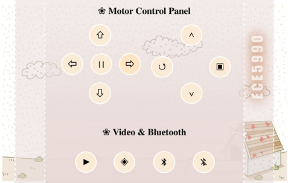
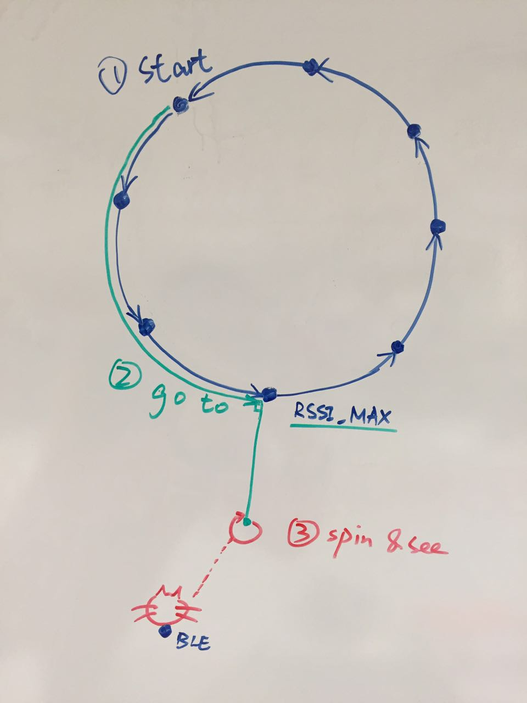
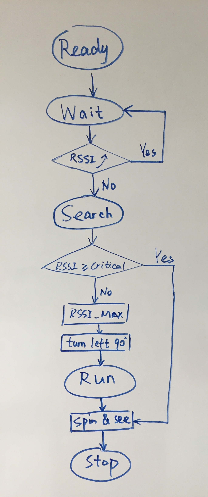
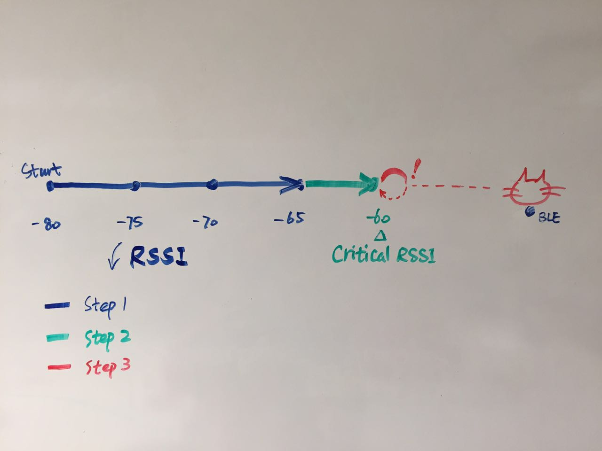
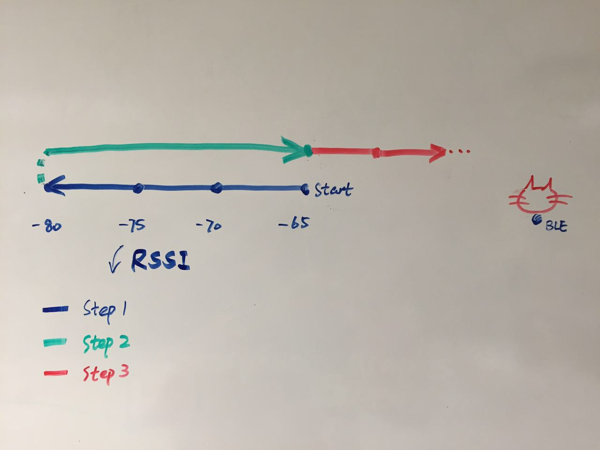
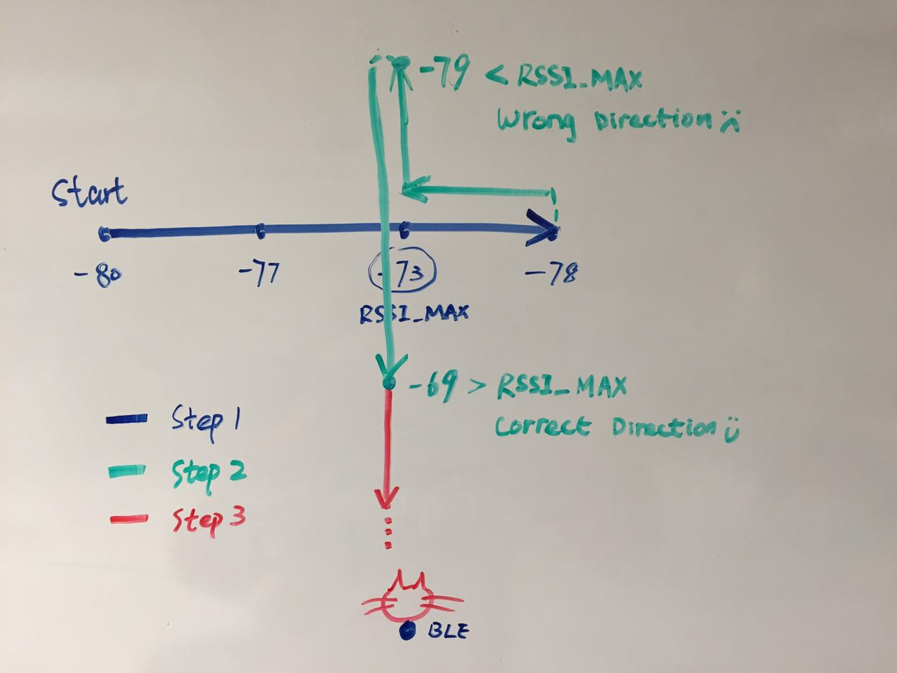
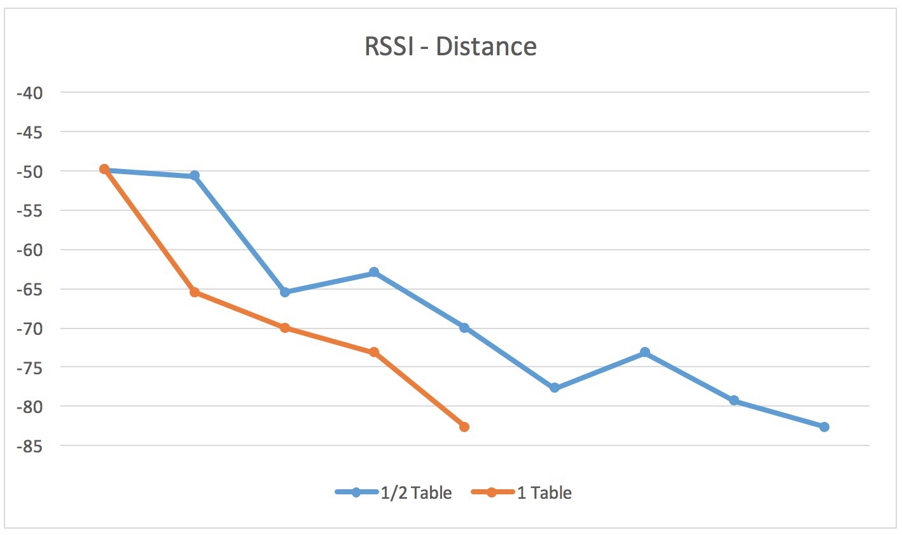

Nowadays, more and more people would like to keep a pet at their home. According to the 2015-2016 National Pet Owners Survey conducted by the American Pet Products Association (APPA), as of 2016 It's estimated that 70-80 million dogs and 74-96 million cats are owned in the United States. Approximately 37-47% of all households in the United States have a dog, and 30-37% have a cat. Sixty-five percent of U.S. households, or about 79.7 million families, own a pet. They treat their pets as their friends, even members of their family. Therefore, most owners are carious about their pets’ timely behavior when they are not at home. Out of this purpose, we planned to design a robot as our final project for those pet owners to supervisor their no matter where they are.
This project mainly focused on the following problems:
We separated the whole project into five parts: website design, remote control, camera recording, Bluetooth searching, and face recognition. We will introduce every part in details as follows.
The basic website was written in HTML, adding some styles with CSS. Since the main window clients will interact with is the website, we tried to make it more beautiful, practical, and humanized. We screenshot the website in figure 1. There are two kinds of buttons in this page, motor control buttons and camera & Bluetooth buttons. The former ones are used to remotely control the robot moving around. There are 9 buttons in total: forward, backward, turn left, turn right, pause, speed up, speed down, quit, and restart. The latter ones are respectively used to open the camera, recording real-time video, and start search for pets. Another function is when hovering on or click a certain button, the button color will turn darken(like the ‘turn left’ button in this picture) which could indicate which button has already been pressed, in order to tell the current state of the robot.
To realize remote control, we used Django as the previous project in last semester. Django framework use Model View Template(MVT) to construct the database. The model layer is an abstraction lay for structuring and manipulating the data of your web application. The view layer encapsulates the logic responsible for processing a user’s Http response and request, and also render the HTML page to display in the website. The template is a container for all the files needed to display the webpages, like HTML files, CSS files, JavaScript files, JQuery files, etc. In our project, we referenced the JavaScript part (only my_js.js file) from the previous project, which defined all the control functions. Once the users click a button, the related function will be called and pass a ‘cmd’ variable to view.py. Once the user’s request is received by the view layer, it will call a specific function in the server to control the robot to do different behavior.
RoPet is designed to allow pet owners to watch how their pets behave when their pets are unsupervised, therefore, real time video streaming is required for this project. After attaching a Raspberry Pi camera module to the RPi board, we installed the picamera software library on Raspberry Pi. Picamera is a package which provides a native Python interface to the Raspberry Pi camera module for Python 2.7 (or above). Using the socket and picamera interface, we implemented a program in which RPi acts as a server. When the RPi accepts a connection from a client, it starts streaming video for a 60 second time period. The stream can be viewed through the vlc media player by providing a network URL which is something like this:tcp/h264://my_pi_address:8000/
In order to find the Bluetooth tag, the position where the strongest RSSI is received should be found at first because this position identify the direction of Bluetooth tag. Afterwards, the robot will follow this direction to find the tag under the help of picamera. Once the face is found, the robot will stop and quit the whole program; otherwise, start for a second search. We designed two algothrim to search the tag: Circle Algothrim and Line Algothrim
1. Circle AlgothrimTo reduce the corner cases, firstly we tried a circle algorithm to find the Bluetooth position. Here, we defined four states to describe the current task for the robot, that is, ‘READY’, ‘WAIT’, WEARCH’, ‘RUN’.
For the ‘ready’, the robot will stay still at its initial point to calculate the current RSSI value. Once it gains a valid RSSI value, it will turn to ‘WAIT’ state. Under this state, a second RSSI value will be calculated again in order to be compared with the previous one in ‘READY’ state. Afterwards, two different situations may happen. The first one is that the current RSSI value is bigger than the previous one. In this case, we assume the pet is currently approaching the robot since the Bluetooth signal is becoming stronger. Then the robot just stays still to wait for the pet. In other words, the system will enter ‘WAIT’ state again to calculate another RSSI value and compare again. The other situation is the current RSSI is smaller than the previous, which means the pet is moving further from the robot. Then the robot will decide to find the pet by itself by entering ‘SEARCH’ state.
In the ‘SEARCH’ state, the basic idea is the robot will run in a circle in order to find the position where the RSSI value is strongest. During this process, there are two phases in general. The first phase is that the robot will run 6 arcs which composes a circle. After the robot runs each arc, it will stop to calculate the RSSI at its current position and make a comparison. If the current RSSI is bigger than the ideal value(-63, this value comes from some tests in the Testing part), it will turn around and execute find_face problem to see whether there is a pet around. If yes, stop and quit the whole program; otherwise it will run another arc and make a comparison again. After running the whole circle, a RSSI value list is generated and the maximum RSSI value will be calculated based on this list. The first phase is finished at this point. The second phase is similar, running an arc and make a comparison. The difference is about the comparison whose base value is the maximum RSSI value calculated in the first phase instead of the ideal value. After the robot find the position of maximum RSSI value, it will stop, turn 90 degrees to face the pet, and enter ‘RUN’ state.
In the ‘RUN’ state, the robot will run several segments while calculating the RSSI to find the position of ideal RSSI value. Once it finds this position, it will turn around and try to find pet face. If it does find a pet face, stop and quit this problem; otherwise, enter ‘wait’ state to make a second search.
  Line AlgothrimAnother possible algorithm for the robot to find the pet is searching by line. Given an original position where RoPet starts searching, it calculates the rssi value at the origin. Then it goes a straight line and stops every unit time. Each time it stops, it calculates the RSSI at that position. After this, there will be three possible outcomes:
The first scenario happens when RPi is getting closer to the pet while it moves. So the point where it stops is where we get the greatest rssi on this line. If this maximum rssi is greater than or equal to a critical rssi value which indicates the distance is close enough for RoPet to see the pet, it goes to “turn and find” mode in which RoPet rotates and stops when the camera sees a pet. If the maximum rssi value is smaller than the critical value, it will restart linear searching by taking the current position as the origin.
The second possibility is that RPi gets farther to the pet. In this case, after going a line on which rssi continuously decreases, RoPet goes backwards to its original position and starts searching in the opposite direction.
The third case is that the pet is somewhere next to the line. We can trace the pet by making a perpendicular from the point of the line where maximum rssi value locates. Since the pet can be on either side, we set a default direction, say letting RoPet turn left, then go straight for one unit time, calculate rssi, compare it with the maximum rssi value, and if the current rssi is greater, it means that we are in the correct direction. Otherwise turn around and search the other side. Once the correct direction is found, we repeat linear searching and this will lead us to the first case.
In order to find the pet as soon as possible, we implemented face recognition technique so that RoPet can look around and decide the correct direction of the pet from a reasonable distance. This is realized by utilizing opencv and picamera packages, plus a face pattern file from the internet.
To gain the range of RSSI values, we made some tests and recorded the results in the following graph.
We use the length of table as a unit. When using ½ table, the value is not much accurate because the value in a further position could be smaller than that in a closer position. But with 1 table unit, the value changes linearly. Also we got the ideal RSSI as about -62, which is about 2-3 feet from the bluetooth tag. One big problem we faced was that the RSSI value was not linearly correlated with the distance from BLE and the receptor. Also it can vary a lot even if everyone is on their original position. In order to compensate this problem, we made the robot stop for 15 seconds to get enough RSSI values and removed the greatest and least value from the RSSI list before calculate the mean RSSI value.
Initially we tried to add a vlc plugin in the webpage to display the real time video. However most browsers don’t support Netscape Plugin Application Programming Interface (NPAPI) which is used by VLC player any more and picamera only works with VLC media player. We also tried other solutions but it turned out to be a trivial problem so we decided to just open a VLC player from the client’s side to view the video stream.
One problem was that recognizing pets required us to use machine learning programs to generate a pattern file in xml format. This process could be extremely time consuming and existing pet pattern files were not found on the internet. So we used human face recognition eventually. Another problem was that both face recognition and video streaming used the same camera. But the camera only allowed one process at once so users couldn’t view the video while RoPet is doing face recognition.
In the circle algorithm, there were three big improvements. The first one is we tested to find the ideal arc number in the first phase. Our first try is 8 arc. Since the motor was not stable, the most arc it ran, the more skewed was the circle, which would affect the calculation of maximum RSSI value position. Finally we decided to run the robot in 6 arcs. Another one is adding comparison based on the ideal RSSI value while run 6 arcs. This improved the efficiency if the robot is close to the pet before it starts. In this case, the robot will stop at the position of ideal value without finishing both phases.
The third one is in the second phase. Our first idea was after the maximum value was found, keep in mind its position by index(say 1) in the RSSI value list. In the second round, we made the robot running for a specific number of arcs(in this example is 2) to reach the maximum value position. But because of mechanical issue, the arc the robot ran in the second phase differed significantly from the first phase. So the robot hardly found the accurate position. Therefore, we modified the algorithm to make the robot calculate while running in the second phase and make comparisons with the maximum RSSI value. In this case, the robot turns to find the accurate position almost all the time.
Since the non-linear relationship between RSSI value and distance, RSSI values on a line may lead RoPet to an entirely wrong direction. We solved this problem by increasing the length of unit line segment RoPet goes according to the RSSI-Distance chart. But the drawback of this solution is that there should be enough space for RoPet to run a long straight line.
Each objective has been achieved. Specifically, users can control RoPet (our robot built on top of Raspberry Pi) through a fancy website that we made from scratch; ask RoPet to start searching for their pet by clicking a button on the web page, start supervising the pet after searching, and remotely “drive” the robot by using the control panel on the web page.
The biggest problem we are facing right now is the mechanical issue caused by the motor. The two servos could not keep stable because of the unstable voltage. Therefore, the robot sometimes won’t run in the same circle even we have succeed for several times before. To fix this problem, we plan to use short-range digital distance sensors to compensate the speed difference between two motors.
We would like to thank Professor Skovira for not only his great advice and lectures but also being open-minded and helpful all the time. We also appreciate the help from TAs including Gautham, Jacob and Jingyao throughout this semester. ECE5990 2016 Spring staff really provided us with an amazing course experience and beautiful memory at Cornell. Additionally, we would like to thank Victor Fei, Liwei Han and Alex Tan for their help of the use of Django.
Mengqiao Li(ml2439@cornell.edu), Bingyu Wang(bw479@cornell.edu)